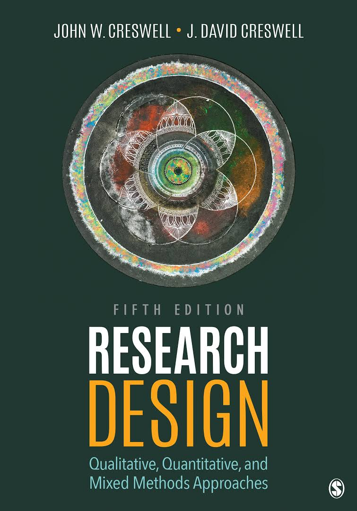

Research Books
Research books are essential tools for academic and professional development. They provide in-depth information and analysis on various topics, helping readers gain a deeper understanding of complex subjects.
About Research
Research is a systematic investigation into and study of materials and sources to establish facts and reach new conclusions. It is a critical component of advancement in science, technology, and various academic fields. Research books compile extensive studies and findings, offering valuable insights and knowledge.
Famous Research Books
- "The Structure of Scientific Revolutions" by Thomas S. Kuhn - This book introduces the concept of paradigm shifts in scientific research.
- "A Brief History of Time" by Stephen Hawking - A popular science book that explains various concepts in cosmology.
- "The Selfish Gene" by Richard Dawkins - A book on evolution that popularized the gene-centered view of evolution.
- "Guns, Germs, and Steel" by Jared Diamond - Explores the factors that have influenced the development of human societies.
- "Sapiens: A Brief History of Humankind" by Yuval Noah Harari - Covers the history of humanity from the Stone Age to the present.
Featured Book

$14
Research